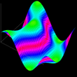
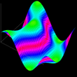

This is a pure JavaScript implementation of a 3D surface plot.
The above example demonstrates the JavaScript 3D surface plot. This is generated by the code shown
here.
The code creates a plot representing the trigonometric function z = cos(x) * cos(y). Click and drag
the above to rotate. Hold the shift key and drag to scale.
Tested in Chrome, Firefox, Opera, Safari and Internet Explorer 6.
Works in IE via use of
excanvas.
Performs best in Safari and Chrome.
For implementation details and how to use it on your own web page,
see
here.
Since VML renders very slowly in IE it is advised that the
fillPolygons
option is set to false when the script is run in IE, especially when
there are a substantial number of points in the diagram.


 
